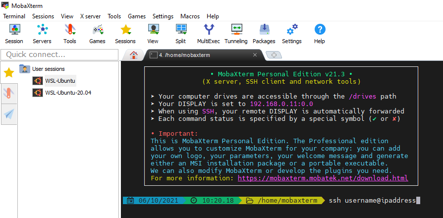

Connect to a remote machine via ssh
Download and install MobaXterm.
Start MobaXterm and connect to the remote machine by typing ssh username@ipaddress into the command line. You will be asked for the password.
Once connected, in addition to the terminal itself you will be able to navigate the remote filesystem and open files using the panel on the left.
Download XQuartz and double click on the file to install. Once this has completed, you can ssh into the remote machine via typing the following into a terminal ssh username@ipaddress -X.
Simply fire up a terminal and type ssh username@ipaddress -X.
We have set up a remote desktop server on the host so that you can run graphical applications more smoothly. In order to use the remote desktop, you will need a VNC viewer. The majority of Linux and macOS users will have such a client pre-installed (e.g. Remmina on Ubuntu). Windows users most likely will need to install a VNC viewer (e.g. TigerVNC; the current installer for 64-bit systems can be downloaded from here).
Download and install a VNC viewer. Use it to connect to the IP of the remote machine on port 5901 and provide the VNC password when prompted.
Modern macOS has a VNC client installed and Safari can be used to connect to the remote desktop. Open Safari and type vnc://ipaddress:5901 into the search bar. Provide the VNC password of the remote when prompted.
Most Linux distros come with a VNC viewer installed. Fire it up and connect to ipaddress:5901. Provide the VNC password when prompted.